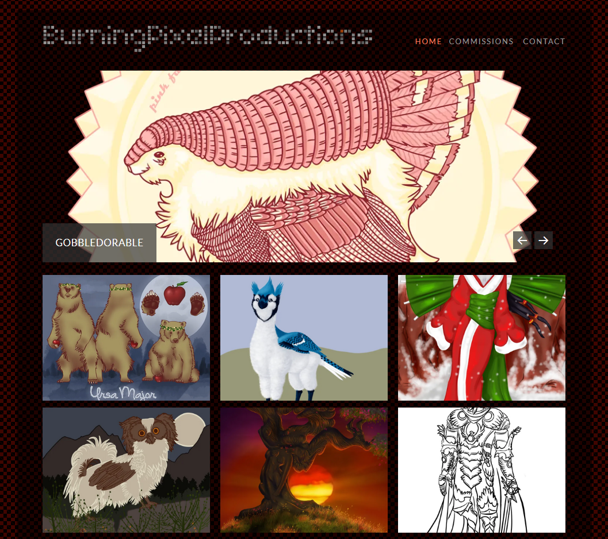

A real cat of all trades.
I try to know at least a little bit about everything so I can connect all the dots- clearly, I love to learn. My pride is in being self-sufficient, but don't take that to mean I won't ask for help, or be a terrible teammate. If you know where the dot goes, I need to learn that; if you're part of my team, that dot is yours and I am counting on you to handle it, because we're going to make something beautiful. Definitely ask me for help! My ideas might seem like they come out of left field, but that's because I didn't pursue knowledge in any particular order, and probably not in the fields you're expecting. Sometimes I procrastinate- not because I'm avoiding a task, but because there's so much to do and I should have organized my checklist better.
You might notice the cat is:
Now what's going on with that cat?
I'm an assistant - definitely a little more hands on than your smart speaker. My clients have needed my assistance with teleconferencing, screen sharing, green screens and cameras for broadcasting, and recording equipment for podcasts. I've taught the major office programs, and a few of the major art programs. If you need to get something done, I will figure out how to do it, and more importantly, how much you really need to know about it.
I'm a fixer - you won't catch me throwing things away just because. The key principles of being frugal and keeping a low waste footprint is to reduce, recycle, and reuse. I'm that person who will take three broken items and end up with one that works. Starting from this position means I've done the research and can plan purchases inside a tight budget, or for a specific use case, including an upgrade path to get the most out of the equipment.
I'm a maker - building things from scratch means it's everything I want and nothing I don't want. I can model a part and print it the same day, because 3D printing is almost a replicator and we live in the future. My haven is my workshop; I can take a project from start to finish with metal and wood working, build the electronics to run it, and make the blueprints to share my creation with anyone who might find them useful.
I'm an artist - creativity is what all of my other skills are based on. I started out with a pencil and paper, and it's still one of my hobbies. My goal is to help people visualize their ideas; I've formatted manuscripts and designed book covers for professional publishing, but my roots are simply bringing someone's character to life. There's always a new character to draw, mostly for fun, occasionally for profit, but always for practice.
Go on, take a look!

Let's talk.
Social links will go here.